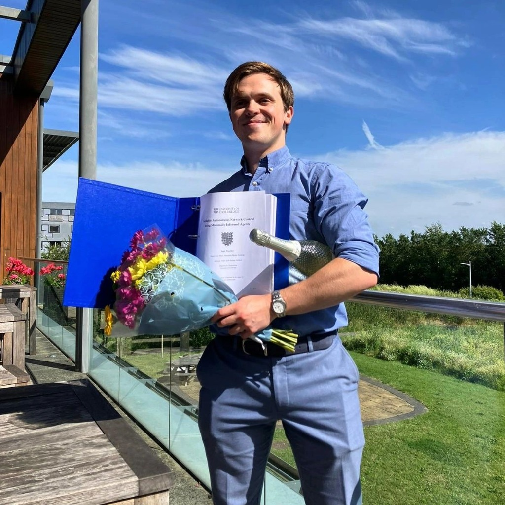

A New Name

A new name.
The end of a 5 year journey—my PhD at Cambridge is finally over. I am now Doctor Yaniv Proselkov. It's a surreal thing, to earn a new name. In this ceremony, I was surrounded by others, draped in red, blue, white, and more, there was this sense of excitement and anxiety in the air. What if I mess up the ceremony? What if they, for some reason, refuse me the degree? But after holding the finger of the Praelector of Christ's, my right confirmed by the Proctors, and having my hands clasped by the Master of Jesus, I walked off with my degree.
Waiting for me was my Supervisor, my colleagues, my friends, my family, and my new name.
Over these 5 years I have wept, screamed, raged, and sat catatonic chanting that I was useless. In that time, my friends, family, and mentors have helped me through.
Over these 5 years I have smiled, laughed, discovered, and jumped for joy when the science finally worked. In that time, my friends, family, and mentors have sat by my side and celebrated with me.
I have learned so much—I am technically the world's leading expert on the science of modelling minimally informed distributed infrastructural systems to determine their long term risk profiles (an elegantly named field)—but the greatest things I have learned have been humility, patience, confidence, and, above it all, gratitude. I am so unbelievably grateful for everyone who has stood by me as I finished this journey.
For everyone I've known over these 5 incredible years, I want to thank you and thank you and thank you. I have this new name not because I am no longer me. I have it because I've been lucky enough to be affected by so many people. I am the sum of so many monumental people, and in recognition of this, I have this new name, to fit how I am so much more than just myself, as I was, before I started.
I will wear this name with pride, and hopefully make all the people who helped me earn it proud, too.
I will also be sure to correct literally everyone who doesn't use my title, because that isn't annoying to people in the slightest, is it? 😉
Onto the next one!
Originally published on LinkedIn — view the original post and discussion on LinkedIn ↗.